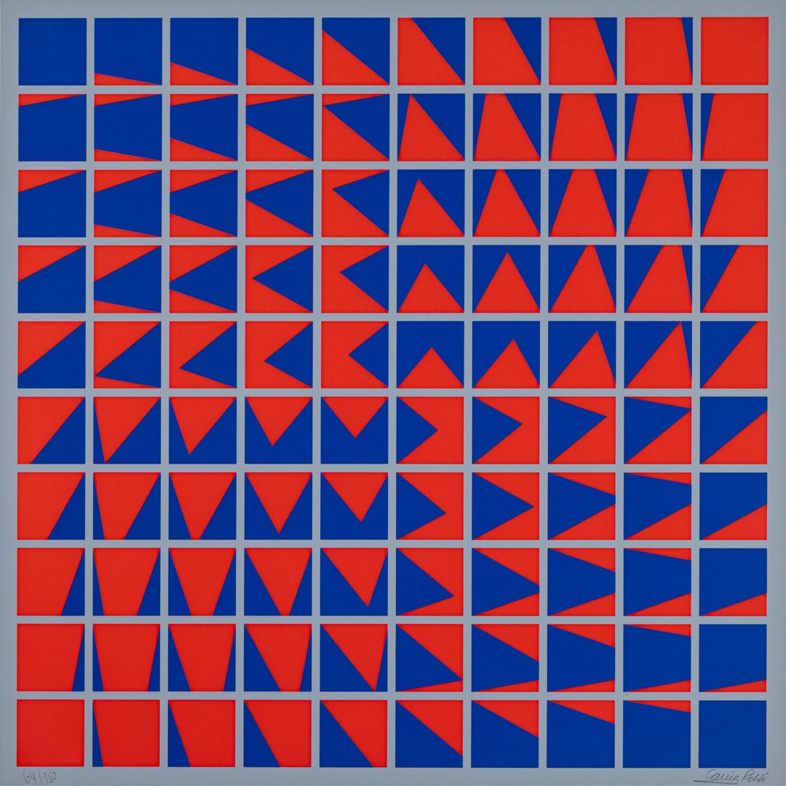

Horacio Garcia Rossi
Biografia
È nato a Buenos Aires, Argentina. Dal 1950 al 1957: studia alla Scuola Nazionale di Belle Arti di Buenos Aires dove, successivamente, insegna. Durante gli studi conosce Demarco, Le Parc e Sobrino. Dal 1959 si stabilisce e lavora a Parigi. I suoi primi lavori sono impostati sulla ricerca bidimensionale, sulla problematica dell'anonimato e della moltiplicazione della forma, del movimento virtuale, della programmazione e della ripetizione in bianco, nero e grigio e quindi sui problemi della sovrapposizione dei colori. Nel 1960 è cofondatore del Centre de Recherches d'Arts Visuel e, dopo, del GRAV (Groupe de Recherches d'Art Visuel). Interessato dall'analisi dei fenomeni visivi, a partire dal 1962 introduce nelle sue opere il movimento reale e la luce. Prime esperienze di forme geometriche su schermo. Contemporaneamente realizza opere che possono essere manipolate dal pubblico (Cilindri in rotazione) e inizia una ricerca continua sui problemi dell'instabilità con la luce e il movimento, quali le "Botles à la lumière instable" con colori e motivi da maneggiare, e delle strutture luminose a colori mutevoli. A partire dal 1966, prime esperienze con l'identificazione visuale della scrittura (Mouvement), che lo conducono verso un Abbecedario in movimento (ritratto ambiguo dei membri del GRAV), poi, a partire dal 1960, a una ricerca sistematica di un alfabeto ambiguo che tenta di dotare di movimento ogni lettera secondo la forma e il significato. Dal 1972 al 1974, ritorna ai problemi plastici bidimensionali e alla ricerca di una struttura semplice con mezzi analitici. Compie studi approfonditi sul colore e le sue possibilità. Dal 1974 al 1978 compie ricerche sulla problematica linguistica in quanto soggetto dell'opera. Dopo il 1978 indirizza le sue ricerche sulla problematica del colore-luce.

135/800
In quest’ opera notiamo la composizione attraverso oggetti geometrici, troviamo appunto un rombo al centro di un quadrato di una colorazione particolare. Un misto di colori verdi e blu molto scuri che tendono a dare l’impressione quasi di un viola sui lati sinistri all’ interno del quadrato, mentre sulla parte di destra il colore blu risulta più in evidenza. Il rombo presenta lo stesso colore verde scuro che possiamo notare sullo sfondo e che tende a cambiare tonalità diventando sempre più acceso e brillante avvicinandosi man mano ad una linea verticale di colore rosso. Le tonalità vengono separate precisamente all’interno di righe verticali.

Serigrafia originale del GRAV
Le serigrafie di Garcia Rossi del 1975 sono caratterizzate da composizioni geometriche che creano effetti ottici dinamici, coinvolgendo l'osservatore in un'esperienza visiva interattiva proprio come possiamo notare in questa opera. Quest’ ultima riflette l'interesse di Garcia Rossi per l'interazione tra luce e colore, nonché per la partecipazione attiva dello spettatore nella percezione dell'opera d'arte. Quest’ opera è caratterizzata da un quadrato contenente delle linee orizzontali e verticali che formano dei quadratini di piccole dimensioni al cui interno vengono disegnate delle figure geometriche triangolari che danno una percezione dinamica a colui che la osserva. La cornice è di un colore azzurro biancastro, lo stesso colore che viene usato per delimitare i bordi dei quadrati interni, i quadretti sono colorati con un rosso acceso, quasi arancione e le figure al loro interno sono blu scuro, colori contrastanti per aumentare l’effetto dinamico.